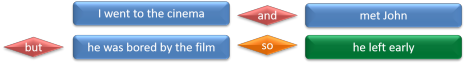
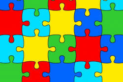

Complex sentences: the introduction

Note: if you don't know the difference between a subject and an
object or your complement from your elbow, it may be wise to follow
the basic ELT training course grammar section which introduces
some fundamental concepts.
The other area you might like to cover before this guide is the one
on analysing phrase structures.
 |
4 Types of sentences |
First of all, a little revision is in order.
There are 4 types of sentences represented by the examples below.
Can you identify them?
Click here when you have.
- I went to the cinema.
- I went to the cinema and I met John.
- I went to the cinema because I was bored.
- I went to the cinema because I was bored and had nothing better to do.
| Sentence type | What it is | Example | Comment |
| Simple | One noun and one (finite) verb | I went to the cinema. | This is a finite clause which can stand alone |
| Compound | Two clauses (or more) of equal importance | I went to the cinema and I met John. | Both parts of a compound sentence can stand alone. Usually, they are joined with something like and, or, but |
| Complex | Two clauses, one of which is subordinate (depends on) the other | I went to the cinema because I was bored. | The second part of this is a subordinate clause: it cannot stand alone and retain the same meaning |
| Compound-complex | A combination of the two | I went to the cinema because I was bored and had nothing better to do. | These sorts of sentences are sometimes difficult for learners to unpack |
Note that this classification is one used in so-called traditional grammar. From other points of view, e.g., functional grammar, all sentences which consist of more than one clause may be defined as complex sentences (Lock, 1996:247). We retain the distinction here but it is not a necessary one for what follows.
The following examples show that compound and complex sentences are not, of course, confined to two or three clauses:
- I went to the cinema and met John but he was bored by the film so he left early.
- I went to the cinema because I was bored and had nothing better to do as I'd finished my essay and already sent it in.
In sentence 1. we have a compound of
went to the cinema
and
met John
This is followed by a further independent clause
he was bored
and a subordinate clause
so he left early.
In sentence 2., we have the independent clause
I went to the
cinema
followed by a subordinate clause
because I was
bored
and that has a further subordinate clause
as I'd
finished my essay
which is linked to another independent clause
and already sent it in
The final clause is incomplete because the subject and
auxiliary verb (I had) have been elided. We may do
this only if they apply to both clauses.
Here's another way to understand it.
-
independent clauses are in blue boxes
-
dependent clauses are in green boxes
-
coordinating conjunctions are in red boxes
-
subordinating conjunctions are in orange boxes
Sentence 1:

Sentence 2:

 |
Types of clause |
We have distinguished two clause types in the above:
- Independent clauses
- These are not dependent structurally on other clauses and
can stand alone, potentially, at least.
I went to the cinema
is perfectly comprehensible and the reason need not be given.
This sentence contains two independent clauses, highlighted in green:
I took the bus to the station and I just managed to catch the train. - Dependent clauses
- These are also, in traditional grammar, called subordinate
clauses for the reason that they are structurally or
semantically dependent on
other clauses and cannot usually stand alone. Here's an
example with the dependent or subordinate clause highlighted in
blue:
When I came home I saw that the window was broken.
In spoken language, of course, a dependent clause can stand alone when the independent clause is understood. For example,
Why are you so late?
Because the bus broke down.
|  | Types of connection |
If you are unsure about the difference between the various types of conjunction in English, follow the guide to conjunction on this site linked in the list of related guides at the end.
In traditional grammars conjunction is the name given to clausal connections. Here, we'll look at things from a slightly different, functional, angle and distinguish between linking and binding.
 |
linking |
When two clauses are equal, they can be linked. Here are some examples with the link highlighted in red.
- Stop nagging; I'll do it tomorrow.
- You can stay here with me or you can go with your father.
- He gave it to me because I wanted it and he had no use for it.
- While I was walking the dog and thinking about the day ahead, I ran into an old friend.
The rule is simple: for linking to occur, both
clauses must be either independent or dependent.
In examples 1
and 2 the clauses are both independent.
In 3 and 4, they are
both dependent.
We can use punctuation, e.g., a semi-colon, to link or we can employ a conjunction. There are examples of both above.
sequencing linked clauses
Sometimes, the clauses can be reversed without changing the
meaning. In sentence 3, for example, there is little
difference if we say
He gave it to me because I wanted it and
he had no use for
it
or
He gave it to me because he had no use for
it and I wanted it.
Note that and
clearly belongs to neither clause because it remains between
them when they are reversed. That is a defining
characteristic of a coordinating conjunction, but not the only one.
At other times ordering is important either because:
- There is a logical chronological relationship which is
disturbed by moving clauses around.
I went home and had a long, hot bath.
is not at all the same as
I had a long hot bath and went home. - There is an implied causal relationship.
I was angry and walked out in a huff.
is not the same as
I walked out in a huff and was angry.
subject omission in linked clauses
In linked clauses, we have a frequent example of the omission of
the subject. If the subject of the verbs in both clauses is
unchanged, it can be omitted.
I went out and I caught the bus
means the same as
I
went out and caught the bus.
auxiliary omission in linked clauses
By the same token, we can elide the auxiliary verb (whether it is
modal or primary) providing it applies to both verbs. In these
examples, the subject is also omitted because it applies to both
verb phrases.
I must do my homework and clean the flat
I had washed the car and put it in the garage
 |
binding |
When clauses are unequal, they are connected by binding.
The simplest example is when we have an independent and dependent clause such as:
- The room was a mess because I'd been too busy to clear up.
- When I'd finished, it looked a lot better.
sequencing in bound clauses
Reversing the clauses is possible:
- Because I'd been too busy to clear up, the room was a mess.
- It looked a lot better when I'd finished.
However, when clauses are linked in this way the conjunction moves with the clause. That is to say it is part of it. That is a defining characteristic of subordinating conjunctions.
Sequencing can be even more flexible with the dependent clause embedded in the independent clause:
- Although not a good one, the idea was accepted by the board.
- The idea, although not a good one, was accepted by the board.
We can also have sentences in which a dependent clause has its own dependent clause. This frequently occurs when causal relationships or relative clauses are used. For example,
- The room was a mess because I'd been too busy to clear up while I'd been working.
- I went to the cinema which is in the next town because it was the only one which was showing the film that I wanted to see.
binding without conjunctions
If you have followed the guide to conjunction, you'll be familiar with the range of subordinating (and other) conjunctions used to bind independent and dependent (or subordinate) clauses. However, there are other ways to bind clauses together. For example
- Had you asked, I would have helped.
- By taking a taxi, I managed not to be late.
- Arriving at the meeting, I saw that lots of people were going to be late.
- The meeting which I attended was not very useful.
In 9, it is word order alone which connects the ideas and the
contingent conjunction (if, supposing etc.) has been elided.
In 10, the use of the preposition by and a non-finite participle,
taking,
connects the ideas.
In 11, the non-finite participle alone is enough.
In 12, we have a relative pronoun to connect the clauses.
 |
Catenation, modification, compounding and listing |
There are separate guides to catenative (i.e., joined together in a series) verbs and modification on this site, linked in the list of related guides at the end so only brief mention will be made here. Here's an example:
HYDROUSA intends to set
up, demonstrate and optimize innovative on-site nature-based
solutions to recover fresh water, nutrients and energy from
wastewater, rainwater, groundwater, atmospheric water vapor and
seawater to produce marketable products.
http://www.ekathimerini.com/230601/article/ekathimerini/business/circular-water-economy-introduced-on-greek-islands
There's no doubt that this is a complex sentence but complexity is being achieved in four separate ways:
- Pre-and post-modification of noun phrases
- on-site nature-based + solutions
- energy + from wastewater, rainwater, groundwater, atmospheric water vapor and seawater
- marketable + products
- Verb listing
- set up, demonstrate and optimize
- Compounding
- adjectives: on-site, nature-based
- nouns: wastewater, rainwater, groundwater, seawater
- Catenation
- the first verb intend is catenated with the three which follow to set up, demonstrate and optimize
- the three verbs are catenated with the infinitive to recover
- the verb recover is further catenated with a second infinitive to produce
When four different ways of making complexity are used together in this way it becomes quite hard for learners of the language to extract the core meaning.
 |
Problems for learners (and teachers) |
given and new information
There is a tendency in English to end-focus new information, i.e., to place new information after old. For example,
- I finished my essay and went to meet my friends.
- When I had finished my essay, I went to meet my friends.
- I went to meet my friends when I had finished my essay.
What problems can you see here? Click when you have an answer.
In 1, a sentence of two equal independent
clauses, both bits of information are given equal weight.
In 2, a dependent clause followed by an
independent clause, the writing of the essay is assumed to be known to the
hearer / reader, and the new information, taking the recount
forward, follows this.
In 3, the key information is the timing of meeting friends.
The fact that it did not occur until the essay was finished is the
important new information.
If learners are unaware of this
phenomenon, they will often produce language which is unnatural or
difficult to follow. Raising awareness of end-focus is
important.
conjunct vs. conjunction
What's gone wrong here? Click when you have an answer.
- I went to the cinema therefore I missed your call.
- I was in London because of this I was able to see the exhibition.
- He came to the meeting additionally so did Mary.
Many languages do not handle the
distinction between conjuncts, which lie outside the clause
structure, and subordinating conjunctions, which lie within the clause, in the
same way as English.
In 1, therefore is a conjunct and the sentence should be
rephrased either as two sentences:
I went to the cinema.
Therefore, I missed your call
or by using a real subordinating conjunction:
I
went to the cinema so I missed your call.
Similarly, in sentences 2 and 3, the learner has tried to use
conjuncts, because of this and additionally, as if
they were conjunctions. The result is syntactically flawed.
Again, the sentences need to be rephrased.
This can be done by making two separate sentences, linked by the
conjuncts:
I was in London. Because of this, I was
able to see the exhibition
and
He came to the meeting. Additionally,
so did Mary
Alternatively, the links need to be made with conjunctions:
I was in London so I was able to see the
exhibition
I was able to see the exhibition because I was in London
He came to the meeting and so did Mary
Conjuncts often seem a good deal more formal, especially in spoken
texts.
For more about conjuncts, refer to
the guide
to adverbials on this site linked in the list of related guides at the end.
repeated conjunctions
Some languages (e.g., most Chinese languages) mark the relationships between clauses twice and
speakers of those language may produce sentences such as
Because I was in London so I could meet her.
Although it was hot but he wore a coat.
finite and non-finite verb forms
What has gone wrong here? Click here when you have an answer.
- In order that getting to school on time he got up early.
- He worked hard so that making a lot of money.
- In spite of he worked so hard, he made very little money.
- Without I had a satnav I would have been lost.
There are three problem issues. Languages vary in this and it is unsurprising that the forms cause serious difficulty:
- The conjunctions as,
wherever, because, in order that, so that and as long as
must be used with finite verb clauses. Sentence 1 is as
example of using in order that with a non-finite verb form and it's
wrong. It is correct to use in order to with a non-finite verb
form but that must be an infinitive.
We can have, for example:
I came because I enjoy parties
but not
I came because enjoying parties. - Other conjunctions, such as
while, since, until, although
etc. can be used with finite and non-finite verb
phrases. We can have, for example:
Although she arrived late, she was soon at work
and
Although arriving late, she was soon at work.
I saw him while I was getting off the bus
and
I saw him while getting off the bus.
The guide to subordination, linked below, has more on this with greater exemplification. - Prepositions, such as
in, by, without, in order to, despite, in spite of, as a result of,
so as
etc., can only be used with
non-finite verbs.
We can have, for example:
By opening the window he managed to escape
but not
By he opened the window he managed to escape.
and
As a result of drinking too much, he forgot to ask her name
but not
As a result of he drank too much he forgot to ask her name.
The complex prepositions in order to and so as can only be followed by an infinitive. Both function as subordinating conjunctions in this respect, akin to because. The difference is that conjunctions proper (because, so etc.) must be followed by a finite clause.
The other prepositions, in, by, without, despite, in spite of and as a result of also subordinate in the same way as conjunctions but are followed by a noun phrase or a gerund.
(Non-finite verbs can appear without subjects so learners may not
know when they are needed and produce, e.g.,
While waiting
for my money, the man spoke to me.
in which it is not clear who
exactly was waiting for my money.)
If you want to know more, there is a guide to finite and non-finite verb forms on this site linked in the list of related guides at the end.
Click here to take a test on this.
| Related guides: | |
| relative pronoun clauses | a guide to how relative pronoun clauses are constructed with considerations of the pronouns we use |
| conjunction | a guide to explain the main sorts of conjunction and distinguish subordinators from coordinators |
| subordination | a guide which extends some of the considerations here |
| adverbials | for more on the distinction between a conjunct and a conjunction |
| finite and non-finite verb forms | for more on this critical distinction |
| cleft sentences | a guide to it-, wh-- and other forms of cleft sentences with two verbs |
| fronting | a guide to how moving items to the front of sentences of all kinds can be done for emphasis and the effect on structures which follow |
| relative adverb clauses | a guide to how relative adverbs expressing, when, where and how work |
| indirect questions | a guide to reporting or embedding questions |
| modification | an overview of modification with links to specific types |
| catenative verbs | for a guide to how strings of verbs may be used in clauses to attain a level of complexity |
| negation | a guide to a complex and sometimes odd set of phenomena in English included transferred negation and inversion |
Reference:
Lock, G, 1996, Functional English Grammar, Cambridge:
Cambridge University Press